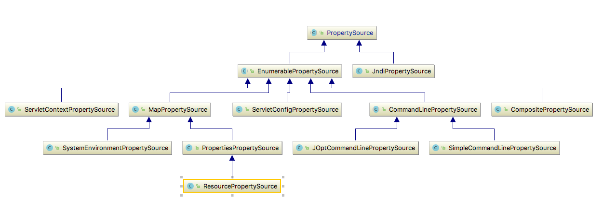
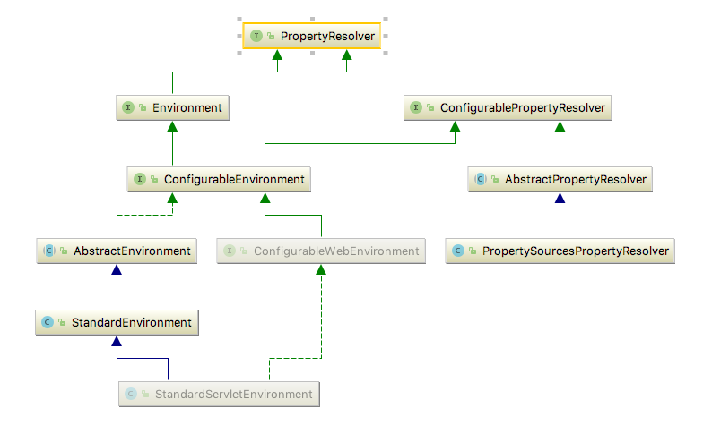

Spring3.1提供了新的属性管理API，而且功能非常强大且很完善，对于一些属性配置信息都应该使用新的API来管理。
1. 新的属性管理API
PropertySource：属性源，key-value属性对抽象，比如用于配置数据PropertyResolver：属性解析器，用于解析相应key的valueEnvironment：环境，本身是一个PropertyResolver，但是提供了Profile特性，即可以根据环境得到相应数据（即激活不同的Profile，可以得到不同的属性数据，比如用于多环境场景的配置（正式机、测试机、开发机DataSource配置））Profile：剖面，只有激活的剖面的组件/配置才会注册到Spring容器，类似于maven中profile
也就是说，新的API主要从配置属性、解析属性、不同环境解析不同的属性、激活哪些组件/配置进行注册这几个方面进行了重新设计，使得API的目的更加清晰，而且功能更加强大。
2. PropertySource

key-value对，API如下所示：
1 | public String getName() //属性源的名字 |
非常类似于Map；用例如下：
1 |
|
MapPropertySource的属性来自于一个Map，而ResourcePropertySource的属性来自于一个properties文件，另外还有如PropertiesPropertySource，其属性来自Properties，ServletContextPropertySource的属性来自ServletContext上下文初始化参数等等，大家可以查找PropertySource的继承层次查找相应实现。
1 |
|
CompositePropertySource提供了组合PropertySource的功能，查找顺序就是注册顺序。
另外还有一个PropertySources，从名字可以看出其包含多个PropertySource：
1 | public interface PropertySources extends Iterable<PropertySource<?>> { |
示例如下：
1 |
|
默认提供了一个MutablePropertySources实现，我们可以调用addFirst添加到列表的开头，addLast添加到末尾，另外可以通过addBefore(propertySourceName, propertySource)或addAfter(propertySourceName, propertySource)添加到某个propertySource前面/后面；最后大家可以通过iterator迭代它，然后按照顺序获取属性。
到目前我们已经有属性了，接下来需要更好的API来解析属性了。
3. PropertyResolver

属性解析器，用来根据名字解析其值等。API如下所示：
1 | public interface PropertyResolver { |
从API上我们已经看出解析器的作用了，具体功能就不要罗嗦了。示例如下：
1 |
|
从如上示例可以看出其非常简单。另外Environment也继承了PropertyResolver。
4. Environment
环境，比如JDK环境，Servlet环境，Spring环境等等；每个环境都有自己的配置数据，如System.getProperties()、System.getenv()等可以拿到JDK环境数据；ServletContext.getInitParameter()可以拿到Servlet环境配置数据等等；也就是说Spring抽象了一个Environment来表示环境配置。
1 | public interface Environment extends PropertyResolver {//继承PropertyResolver |
从API上可以看出，除了可以解析相应的属性信息外，还提供了剖面相关的API，目的是： 可以根据剖面有选择的进行注册组件/配置。比如对于不同的环境注册不同的组件/配置（正式机、测试机、开发机等的数据源配置）。它的主要几个实现如下所示：
MockEnvironment：模拟的环境，用于测试时使用；StandardEnvironment：标准环境，普通Java应用时使用，会自动注册System.getProperties() 和 System.getenv()到环境；StandardServletEnvironment：标准Servlet环境，其继承了StandardEnvironment，Web应用时使用，除了StandardEnvironment外，会自动注册ServletConfig（DispatcherServlet）、ServletContext及JNDI实例到环境；
除了这些，我们也可以根据需求定义自己的Environment。示例如下：
1 |
|
其默认有两个属性：systemProperties（System.getProperties()）和systemEnvironment（System.getenv()）。
在web环境中首先在web.xml中配置：
1 | <context-param> |
使用StandardServletEnvironment加载时，默认除了StandardEnvironment的两个属性外，还有另外三个属性：servletContextInitParams（ServletContext）、servletConfigInitParams（ServletConfig）、jndiProperties（JNDI）。
然后在程序中通过如下代码注入Environment：
1 |
|
另外也可以直接使用ApplicationContext.getEnvironment()获取；接着就可以用如下代码获取配置：
1 | System.out.println(env.getProperty("myConfig")); |
另外我们在运行应用时可以通过-D传入系统参数（System.getProperty()），如java -Ddata=123 com.sishuok.spring3.EnvironmentTest，那么我们可以通过environment.getProperty(“data”) 获取到。
如果我们拿到的上下文是ConfigurableApplicationContext类型，那么可以：ctx.getEnvironment().getPropertySources() ；然后通过PropertySources再添加自定义的PropertySource。
5. Profile
profile，剖面，大体意思是：我们程序可能从某几个剖面来执行应用，比如正式机环境、测试机环境、开发机环境等，每个剖面的配置可能不一样（比如开发机可能使用本地的数据库测试，正式机使用正式机的数据库测试）等；因此呢，就需要根据不同的环境选择不同的配置；如果用过maven，maven中就有profile的概念。
profile有两种：
- 默认的：通过
spring.profiles.default属性获取，如果没有配置默认值是default - 明确激活的：通过
spring.profiles.active获取
查找顺序是：先进性明确激活的匹配，如果没有指定明确激活的（即集合为空）就找默认的；配置属性值从Environment读取。
API请参考Environment部分。设置profile属性，常见的有三种方式：
5.1. 启动Java应用时，通过-D传入系统参数
1 | -Dspring.profiles.active=dev |
5.2. 如果是web环境，可以通过上下文初始化参数设置
1 | <context-param> |
5.3. 通过自定义添加PropertySource
1 | Map<String, Object> map = new HashMap<String, Object>(); |
5.4 直接设置Profile
1 | env.setActiveProfiles("dev", "test"); |
以上方式都可以设置多个profile，多个之间通过如逗号/分号等分隔。
接着我们就可以通过如下API判断是否激活相应的Profile了：
1 | if(env.acceptsProfiles("dev", "test"))) { |
它们之间是或的关系；即找到一个即可；如果有人想不匹配某个profile执行某些事情，可以通过如”!dev” 即没有dev激活时返回true。
当然这种方式还不是太友好，还需要我们手工编程使用，稍候会介绍如何更好的使用它们。
6. <context:property-placeholder/>
${key}占位符属性替换器，配置如下：
1 | <context:property-placeholder |
- ocation：表示属性文件位置，多个之间通过如逗号/分号等分隔；
- file-encoding：文件编码；
- ignore-resource-not-found：如果属性文件找不到，是否忽略，默认false，即不忽略，找不到将抛出异常
- ignore-unresolvable：是否忽略解析不到的属性，如果不忽略，找不到将抛出异常
- properties-ref：本地java.util.Properties配置
- local-override：是否本地覆盖模式，即如果true，那么properties-ref的属性将覆盖location加载的属性
- system-properties-mode：系统属性模式，ENVIRONMENT（默认），NEVER，OVERRIDE
- ENVIRONMENT：将使用Spring 3.1提供的PropertySourcesPlaceholderConfigurer，其他情况使用Spring 3.1之前的PropertyPlaceholderConfigurer
如果是本地覆盖模式：那么查找顺序是：properties-ref、location、environment，否则正好反过来； - OVERRIDE： PropertyPlaceholderConfigurer使用，因为在spring 3.1之前版本是没有Enviroment的，所以OVERRIDE是spring 3.1之前版本的Environment
如果是本地覆盖模式：那么查找顺序是：properties-ref、location、System.getProperty(),System.getenv()，否则正好反过来； - NEVER：只查找properties-ref、location；
- ENVIRONMENT：将使用Spring 3.1提供的PropertySourcesPlaceholderConfigurer，其他情况使用Spring 3.1之前的PropertyPlaceholderConfigurer
- order：当配置多个<context:property-placeholder/>时的查找顺序，关于顺序问题请参考：http://www.iteye.com/topic/1131688
具体使用请参考如下文件中的如dataSource：
https://github.com/zhangkaitao/es/blob/master/web/src/main/resources/spring-config.xml
7. @PropertySource()
Spring 3.1提供的Java Config方式的注解，其属性会自动注册到相应的Environment；如：
1 |
|
接着就可以使用env.getProperty(“encoding”)得到相应的属性值。
另外如果想进行Bean属性的占位符替换，需要注册PropertySourcesPlaceholderConfigurer：
1 |
|
如上配置等价于XML中的<context:property-placeholder/>配置。
如果想导入多个，在Java8之前需要使用@PropertySources注册多个@PropertySource()。
此处要注意：
使用<context:property-placeholder/>不会自动把属性注册到Environment中，而@PropertySource()会；且在XML配置中并没有@PropertySource()等价的XML命名空间配置，如果需要，可以自己写一个。
8. 占位符替换
使用Environment属性替换，如：1
2
3<context:property-placeholder location="classpath:${env}/resources.properties"/>
<context:component-scan base-package="com.sishuok.${package}"/>
<import resource="classpath:${env}/ctx.xml"/>
1 | (value = "classpath:${env}/resources.properties") |
使用PropertySourcesPlaceholderConfigurer / PropertyPlaceholderConfigurer进性Bean属性替换，如：
1 | <bean id="dataSource" class="com.alibaba.druid.pool.DruidDataSource" init-method="init" destroy-method="close"> |
9. SpEL表达式：
请参考Spring-表达式语言之在Bean定义中使用EL
通过如上方式可以实现不同的环境有不同的属性配置，但是如果我们想不同的环境加载不同的Bean呢，比如测试机/正式机环境可能使用远程方式访问某些API，而开发机环境使用本地方式进行开发，提高开发速度，这就需要profile了。
10. <beans profile=”” />
通过在beans标签上加上profile属性，这样当我们激活相应的profile时，此beans标签下的bean就会注册，如下所示：
1 | <beans xmlns="http://www.springframework.org/schema/beans" |
启动应用时设置相应的“spring.profiles.active”即可。另外，如果想指定一个默认的，可以使用
11. @Profile()
Java Config方式的Profile，功能等价于XML中的
1 | ("dev") |
Spring4提供了一个新的@Conditional注解，请参考http://jinnianshilongnian.iteye.com/blog/1989379。
12. @ActiveProfiles()
在测试时，有时候不能通过系统启动参数/上下文参数等指定Profile，此时Spring测试框架提供了@ActiveProfiles（）注解，示例如下：
1 | ("test") |
通过这种方式，我们就激活了test profile。
到此整个Spring的属性管理API就介绍完了，对于属性管理，核心是Environment，所以以后请使用Environment来进行属性管理吧。